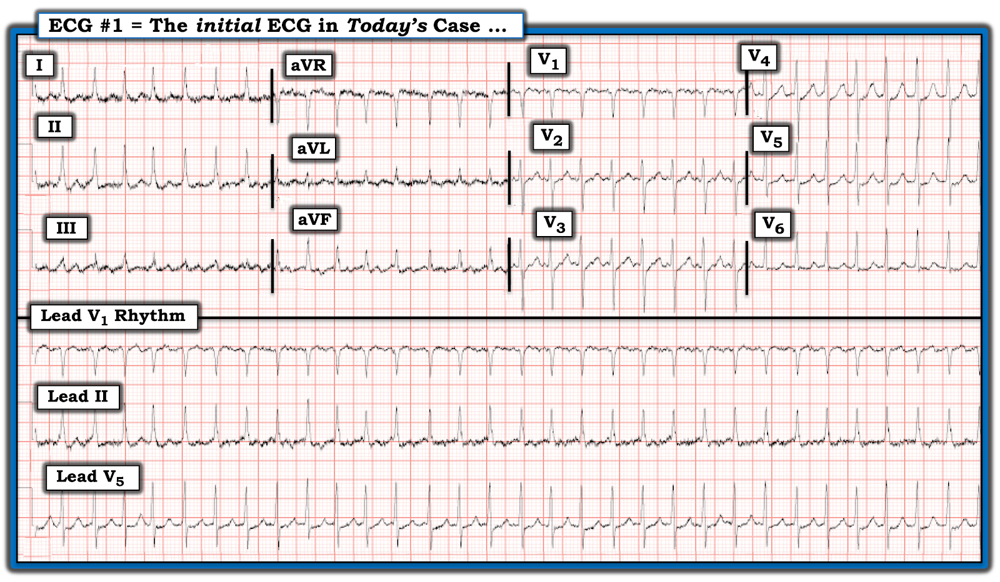
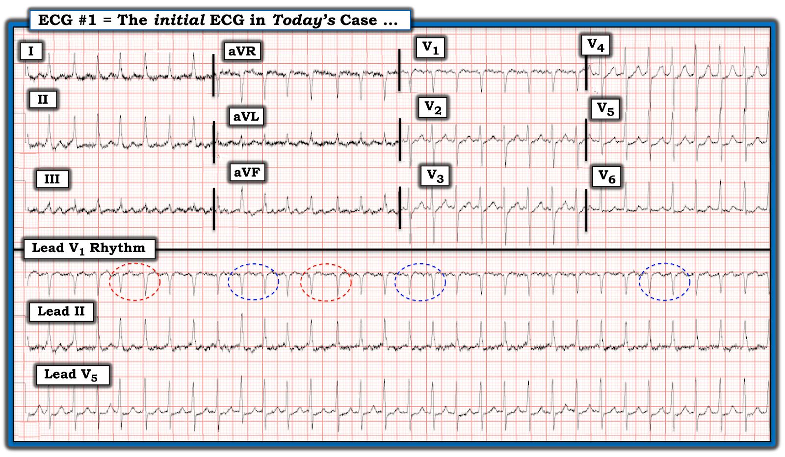
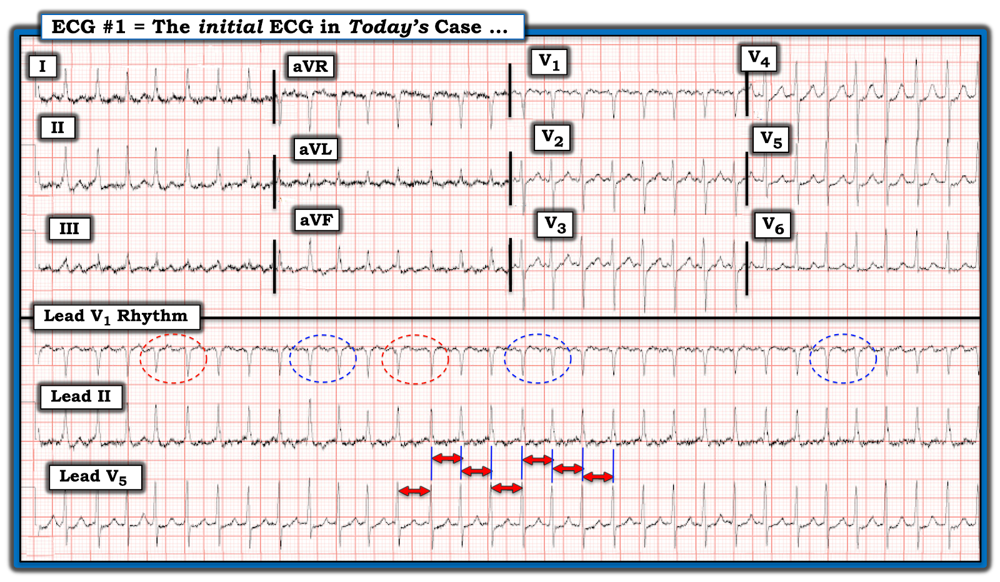
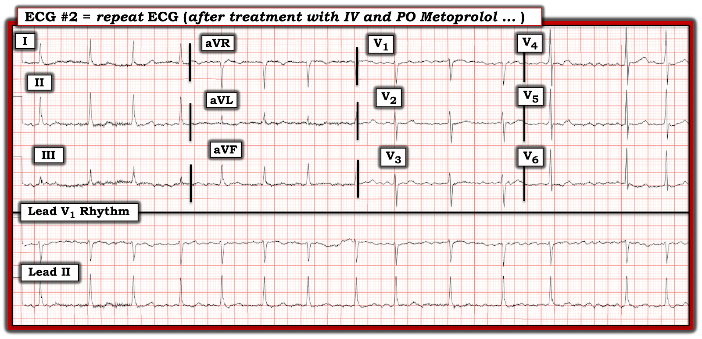
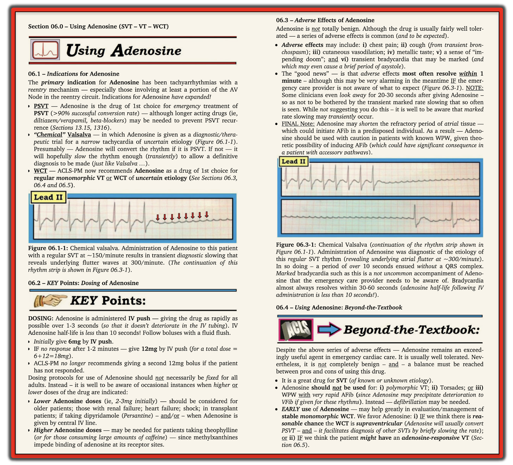

ECG Blog #402 — Adenosine có chuyển được nhịp này không?
Bạn được báo rằng bệnh nhân phòng bên đang ở trong nhịp SVT (nhịp nhanh trên thất – SupraVentricular Tachycardia) đều như ở Hình 1.
CÂU HỎI:
- Nhịp này là AVNRT hay AVRT?
- Adenosine có nhiều khả năng chuyển được nhịp này không?


SUY NGHĨ CỦA TÔI về điện tâm đồ ở Hình 1:
Khi đối mặt với một rối loạn nhịp tim khó — có được một dải nhịp dài gồm 3 chuyển đạo ghi đồng thời là một điều "xa xỉ". Nó mang lại cơ hội tốt nhất để dễ dàng nhận ra độ rộng QRS và hoạt động nhĩ (nếu có).
ĐIỂM THEN CHỐT (PEARL) #1: 3 chuyển đạo tôi ưa dùng để xác định nhịp chính là các chuyển đạo được trình bày ở Hình 1. Đó là:
- Chuyển đạo II — rõ ràng là chuyển đạo TỐT NHẤT trong đa số trường hợp để thấy sóng P và/hoặc hoạt động nhĩ khác. Nhịp xoang được định nghĩa bằng sự hiện diện của sóng P dương với khoảng PR hằng định ở chuyển đạo II.
- Chuyển đạo V1 — là chuyển đạo tốt thứ 2 để thấy sóng P (dù sóng P không nhất thiết dương ở chuyển đạo V1 khi là nhịp xoang). Chuyển đạo V1 cho góc nhìn tốt nhất về hình thái QRS bên phải.
- Chuyển đạo V5 — cho góc nhìn rất tốt về hình thái QRS bên trái .
Và rồi tôi nhìn KỸ HƠN — vào nhịp ở Hình 1.
==============================
CÂU HỎI:
- Nhịp ở Hình 1 có thực sự đều không?
- — GỢI Ý: Trước khi trả lời — hãy NHÌN vào Hình 2.


Nhịp hôm nay có thực sự đều không?
Mặc dù nhịp hôm nay trông có vẻ đều — nó không đều hoàn toàn, như tôi đánh dấu ở Hình 2:
- Ngay cả khi không dùng compa đo — Chẳng phải các khoảng R-R trong những hình bầu dục chấm ĐỎ trông dài hơn một chút so với các khoảng R-R trong những hình bầu dục XANH sao? Điều này xác lập rằng nhịp không đều hoàn toàn. Ngoài ra:
- Tần số của nhịp hôm nay nhanh (gần ~150/phút).
- Phức bộ QRS hẹp ở cả 12 chuyển đạo.
- Mặc dù khó đánh giá hoạt động nhĩ vì có nhiều nhiễu đường nền — có vẻ như không thấy sóng P nào.
- Vì vậy: Việc thấy một nhịp không đều hoàn toàn với phức bộ QRS hẹp, và hoàn toàn không có sóng P — xác lập chẩn đoán là AFib (rung nhĩ – Atrial Fibrillation), ở đây với đáp ứng thất nhanh.
- Ngoài ra — trục bình thường — tăng tiến sóng R phù hợp — không có lớn buồng tim — và có một ít ST chênh xuống không đặc hiệu ở các chuyển đạo trước tim bên, nhiều khả năng liên quan tần số.
ĐIỂM THEN CHỐT (PEARL) #2:
Khi tần số của AFib nhanh — nhịp nhanh không đều này có thể trông như đều trong khi thực ra không đều.
- Việc nhịp này là AFib — dễ nhận ra hơn ở Hình 3.


Hình 3 cho thấy nhịp hôm nay không đều
Các mũi tên hai đầu màu ĐỎ mà tôi vẽ gần giữa dải nhịp dài chuyển đạo V5 đều có độ dài bằng nhau.
- Dù cực kỳ tinh tế — 5 mũi tên hai đầu ở 2 hàng trên của dải nhịp dài chuyển đạo V5 — mỗi mũi tên đều ngắn hơn một chút so với 2 mũi tên hai đầu ở hàng dưới.
Ca bệnh tiếp diễn:
Bệnh nhân hôm nay được điều trị bằng Metoprolol tiêm tĩnh mạch (IV), rồi đường uống (PO). Điện tâm đồ ghi lại sau điều trị này được trình bày ở Hình 4.
- Sau điều trị bằng thuốc chẹn ß — tần số của nhịp hôm nay đã chậm lại đáng kể. Dù vẫn còn nhiễu đường nền — rõ ràng là không có sóng P.
- Tính không đều hoàn toàn của nhịp hôm nay ở Hình 4 giờ đã hiển nhiên. Rõ ràng nhịp này là AFib — ở đây với đáp ứng thất được kiểm soát.
- Lưu ý rằng ST chênh xuống thấy trước đó ở các chuyển đạo trước tim bên trong Hình 3 — nay đã hết, xác nhận rằng ST chênh xuống này đúng là liên quan tần số.


Adenosine có hiệu quả với nhịp hôm nay không?
Adenosine không được dùng trong ca hôm nay. Thay vào đó — việc kiểm soát tần số AFib của bệnh nhân, cũng như xác nhận chẩn đoán nhịp này, đạt được nhờ điều trị bằng thuốc chẹn ß.
- XIN NHẤN MẠNH: Rất dễ không nhận ra rằng nhịp SVT (nhịp nhanh trên thất – SupraVentricular Tachycardia) nhanh mà bệnh nhân hôm nay đến viện là không đều — vì (theo ĐIỂM THEN CHỐT #2) — Khi AFib nhanh, nó có thể trông khá đều. Về lâm sàng, điều này thường không thành vấn đề — vì điều trị cấp cứu ban đầu của nhiều nhịp SVT là tương tự nhau.
Dù vậy — Khi có thể, việc xử trí tối ưu các nhịp SVT dễ đạt được hơn nhiều khi bạn biết chẩn đoán nhịp cụ thể là gì.
- ECG Blog #240 — ôn lại cách tiếp cận của tôi trong đánh giá điện tâm đồ các nhịp SVT đều.
- Adenosine — là một thuốc tuyệt vời để điều trị cấp cứu các SVT do vào lại. Ngay cả khi Adenosine không chuyển được nhịp — thuốc thường giúp chẩn đoán nhịp nhờ tác dụng làm chậm tần số thoáng qua. Dù thuốc thường an toàn (nhờ thời gian bán thải cực ngắn) — tác dụng phụ vẫn có thể xảy ra, và những tác dụng phụ này không phải lúc nào cũng ngắn ngủi. Vì vậy — có lẽ tốt nhất nên tránh dùng Adenosine để điều trị các nhịp mà thuốc có rất ít hoặc không có cơ hội hiệu quả (tức là Nếu bạn biết SVT đang điều trị là AFib — thì tốt hơn nên dùng một thuốc làm chậm tần số hoặc thuốc chống loạn nhịp khác — thay vì chịu rủi ro tác dụng phụ từ một thuốc khó có hiệu quả).
- Xem Hình 5 và 6 — để biết thêm về Adenosine.



==================================
Lời cảm ơn: Xin cảm ơn Mubarak Al-Hatemi (từ Qatar) đã chia sẻ ca bệnh và bản ghi này.
==================================
Các bài ECG Blog liên quan đến ca hôm nay:
- ECG Blog #205 — Ôn lại Cách tiếp cận hệ thống của tôi khi đọc điện tâm đồ 12 chuyển đạo.
- ECG Blog #185 — Ôn lại cách tiếp cận Ps, Qs, 3R khi đọc nhịp.
- ECG Blog #240 — Ôn lại cách tiếp cận một nhịp SVT đều.